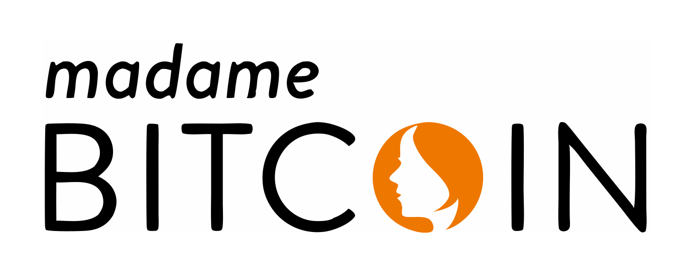

Vielleicht erkennst du dich wieder:
Deine Money Story & Identität
Financial Empowerment Basics
Bitcoin Deep Dive
Statt trockener Theorie gibt es:
Mit meiner fast 30-jährigen Erfahrung als Betriebswirtin und Supervisorin war es schon immer mein Anliegen, Gründerinnen und Unternehmerinnen zu Fragen des Money Mindsets zu beraten.
Ich bin 2016 zum ersten Mal mit Bitcoin in Berührung gekommen und habe 2019 begonnen zu investieren. Hierfür musste ich auch an meiner Haltung zu Geld arbeiten, sonst wäre ich langfristig nicht handlungsfähig geworden. Eine Erfahrung, die ich gerne weitergebe. Mir ist es gelungen, mein Investment innerhalb von 5 Jahren zu vervierfachen. Was für ein Wahnsinns Wertspeicher und was für ein Erfolg!
Gerne gebe ich mein Wissen weiter, damit Frauen an Ihrem Verhältnis und ihrer Einstellung zu Geld etwas verändern können. Und ihr eigenes Kapital diversifiziert in einem Top-Wertspeicher wie Bitcoin anlegen und vermehren können. Daher bin ich im Vorstand des Bitcoin Bundesverband, um auch hier die Position von Frauen zu stärken.
Nach dem Programm kannst du:
Raum für Input, Reflexion & Fragen (2-wöchentlich ca. 90 Min)
Persönliche Begleitung nur für Dich
Bis zu 50 Videos in deinem Tempo
Zur Vertiefung und Integration
Damit Du ins Handeln kommst
Du bist nicht allein auf dem Weg
Du verstehst deine persönliche Geldgeschichte und löst dysfunktionale Glaubenssätze. Du legst die Basis für deine neue Financial Identity als selbstbestimmte Frau.
Du baust dir eine solide, verständliche finanzielle Grundbildung auf und verstehst, wie du ein resilientes Finanzfundament aufbauen kannst.
Du gewinnst ein tiefes, souveränes Verständnis von Bitcoin – ohne Technik-Overload, dafür praxisnah, sicherheitsorientiert und in deinem Tempo.
Das Money Mind Mastery Programm ist für dich, wenn du:
Es ist nicht für dich, wenn du:
Meine Erfahrung als Beraterin und Supervisorin ist, dass viele Frauen eine schlechte Haltung zum Thema Geld haben und es nicht schaffen, sich diesem zentralen Bereich überhaupt zu öffnen. Unsicherheiten, Ängste und blockierende Glaubenssätze führen dazu, dass sie nicht ins Handeln kommen. Eine reine Wissensvermittlung löst das tieferliegende Problem leider nicht. Daher ist es so wichtig, sich das eigene Money Mindset, seine Ursprünge und die blockierenden Glaubenssätze anzuschauen.
Uns ist es wichtig, dass Dein Weiterbildungsbedarf und unser Angebot wirklich passen. Das klären wir in einem 30-minütigen Infogespräch und erst danach kann eine Buchung der Weiterbildung erfolgen.
Rechne mit ca. 2–3 Stunden pro Woche für die Live-Sessions, Videos, Reflexion und Umsetzung.
Die Live-Sessions finden alle 2 Wochen entweder Samstags oder Sonntags von 11–12.30 Uhr statt. Wenn Du an dem Termin nicht kannst, erhältst Du eine Aufzeichnung.
Nein, das Programm ist so aufgebaut, dass Du auch als Einsteigerin sicher mitkommst. Wenn Du schon Vorkenntnisse hast, umso besser.
Nein, obwohl der Preis in den letzten Jahren stark gestiegen ist, sind wir noch relativ früh in der Entwicklung dieser neuen Technologie. Bitcoin wird voraussichtlich trotz Kursschwankungen weiter steigen.
Nein, das Programm ist für alle Frauen, die ihr Money Mindset und ihre finanzielle Situation bewusst gestalten wollen – angestellt, selbstständig oder in der Übergangsphase.
Aussagen zu Finanzen und in welchem Asset man sein Vermögen aufbewahrt sind sehr sensible Daten. Bei Kryptowährungen sind leider viele Betrüger unterwegs, daher empfiehlt es sich, keine persönlichen Daten weiterzugeben.
Ja, Männer sind herzlich eingeladen. Die primäre Zielgruppe sind jedoch Frauen, und das wird in der Ansprache und den Themenschwerpunkten deutlich.
Wenn du innerlich schon ein „Ja" spürst, dann ist das deine Einladung: Du musst nicht mehr alles alleine herausfinden. Lass dich 3 Monate lang begleiten, stärken und fachlich wie emotional auf dein nächstes Money Level vorbereiten.
Zur Landing-Page & Anmeldung ★Meine Programme sind Weiterbildungen und keine Finanzberatung. Mir geht es darum, den Teilnehmerinnen zu einer besseren Haltung zu Geld zu verhelfen, ihnen Finanzbildung zu vermitteln und die komplexen Zusammenhänge von Bitcoin zu erläutern. Damit sie sich selbst eine Meinung bilden können und eine solide Basis für weitere Entscheidungen erhalten. Ich übernehme keine Haftung für individuell getroffene Finanzentscheidungen.